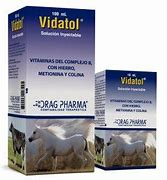

MI PRESENTE
¡HOLA!
Mi nombre es ANDREA RUBI RUIZ RUIZ del sexto semestre , tengo 17 Año de edad naci el 26 de septiembre del año 2005
en ciudad del carmen donde estudie los tres años de
kinder y dos años de primaria , cuando me mude ami pueblo
donde estoy
viviento actualmente , en ORTIZ AVILA donde estudie el tercer año de primaria hasta terminar sexto año , luego estudie lo q es
la secundaria tecnica en XBACAB donde estudie los tres años de secundaria hasta ingresar a la preparatoria donde estoy termi-
nando el tercer año , me gustan los tulipanes y las rosa ,
los tulipanes me gustan de cualquier color , y en las rosas q sean
rojas
se ven muy hermosas por q reflejan amor , y en lo
tulipanes tambien ya q ellos reflejan tranquilidad , paz , amor y
amistad ,

Me gusta tambien
saber cosas de ganaderia , animales saber como son en especial su
alimentacion y sus sistemas de gestacion
saber q vitaminas ponerles , vacunas q puedan darles para
sus resistencias , y para su produccion de leche en caso de las vacas
y en caso de l animal q sea macho , darles una buena
alinentacion para su produccion de carne , tanto como en gallinas
darles alimento
para q produsca huevos , los animales me hacen sentir bien
, me asen sentir viva , estar rodeadas de ellos , sentir us miradas
tanto como
en tristesa y alegria

Me gustan muchos los gatitos son hermosos son cariñosos , son tiernos , sentir sus patitas tan tierna expresan amor , son una hermosura los gatitos
tengo una mejora q le gustan mucho los girasoles , pero
mucho , es muy bonita mi amiga , es inteligente , aveses se deprime ,
pero siempre tiene
fuerzas para seguir , piensa seguir estudiando para ser
maestra de quinder , pienso estudiar agronomia para ayudra alos
animales y estudiar gastr-
onomia para saber mas de comida y el bienestar de los alimentos
1: mi tema este no sirve me confundi
2: historia de los tulipanes
3: datos personales
4: Mi tema